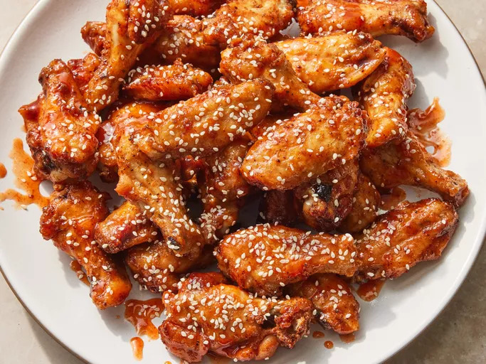

Crispy Honey Sriracha Chicken Wings

These glazed honey sriracha wings are quite delicious and incredibly simple, but the sauce is merely an afterthought here.
The real star of the show is the strange, but effective technique of coating the wings with a baking powder-laced spice rub before baking.
Ingredients
- 2 tablespoons baking powder
- 1 tablespoon kosher salt
- 1 teaspoon freshly ground black pepper
- 1 teaspoon smoked paprika
- 2 ½ pounds chicken wing sections
Ingredients for Honey Sriracha Glaze
- ⅓ cup honey
- ⅓ cup sriracha sauce
- 1 tablespoon seasoned rice vinegar
- ¼ teaspoon sesame oil
- 1 pinch sesame seeds, or as desired
Directions
- Preheat the oven to 425 degrees F (220 degrees C). Line a baking sheet with aluminum foil and place an oven-proof wire rack over the foil.
- Whisk baking powder, salt, black pepper, and paprika together in a small bowl.
- Place chicken wings in a large bowl. Sprinkle 1/2 of the baking powder mixture over wings and toss to coat. Repeat with remaining baking powder mixture, tossing well to coat.
- Arrange wings on the rack of the prepared baking sheet.
- Bake in the preheated oven for 20 minutes. Turn wings and continue baking for 20 minutes. Turn wings again and bake until wings are browned and crispy, about 15 minutes more. Transfer wings to a large bowl.
- For the glaze: Whisk honey, sriracha sauce, rice vinegar, and sesame oil together in a bowl until smooth. Drizzle glaze over wings and toss to coat completely.
- Transfer wings to a serving platter and sprinkle sesame seeds over the top.